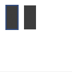

nostroke
nostroke()
Disables the current stroke color. All shapes, paths and text following this command will be drawn without a stroke (outline) color.

stroke(0.2, 0.3, 0.5) rect(10, 10, 20, 40) nostroke() rect(40, 10, 20, 40)
None
stroke
nofill